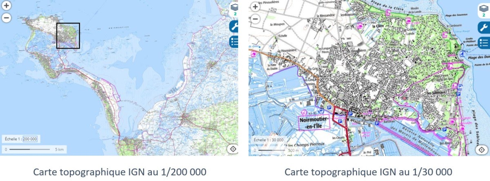
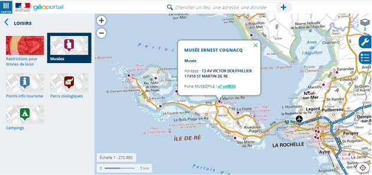
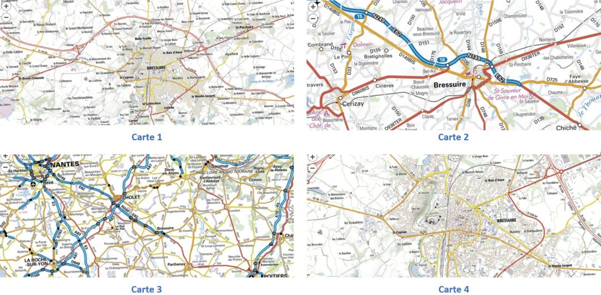
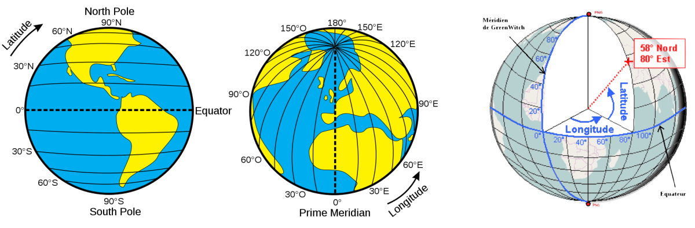
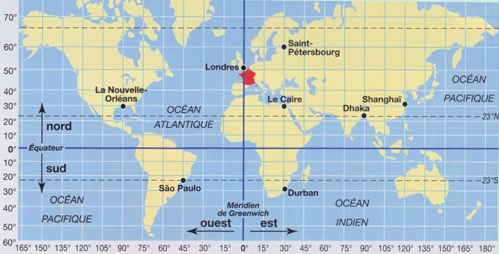

Séance 1 - Les bases de la cartographie
Les bases de la cartographie
Présentation du thème : Localisation, cartographie et mobilité
Exercice 1 : Les repères historiques à retenir
Le système américain GPS a été lancé en : ……………………………
Le premier récepteur GPS est commercialisé en : ……………………………
Le système européen Galiléo a été lancé en : ……………………………
La cartographie
Définition:
La cartographie est la représentation graphique des territoires et de leur relief.
La réalisation d'une carte se fait en trois étapes majeures :
la collecte d'informations qui comprend le relevé de l'espace à représenter (fond de carte) et le relevé des données statistiques qui constitue cet espace.
la sélection des informations et des conceptions graphiques (icônes, style).
l'assemblage (création de la carte) avec le renseignement de la carte (légende, échelle, rose des vents).
La particularité des cartes numériques, utilisées dans un logiciel ou une application adaptée, est que l'on peut passer d'une échelle à l'autre simplement en zoomant sur une partie de la carte.

Echelle d'une carte
C'est le rapport entre la représentation d'une distance sur la carte et cette distance en réalité.
Exemple: Une carte à échelle au 1/1 000 000 signifie que 1 cm sur la carte représente en réalité 1 000 000 cm soit 10 km.
Cartes vectorielles et matricielles
Définition:
On distingue deux grandes catégories de cartes numériques, selon la manière dont l'information est enregistrée.
Une carte vectorielle comporte des objets positionnés selon leurs coordonnées.
Une carte matricielle est une image point par point qui a été dessinée par un cartographe.
Remarque: En zoomant sur une carte vectorielle, des détails apparaissent. Sur une carte matricielle, l'image est simplement agrandie.
Les couches d'informations géographiques
Les systèmes de cartographie numériques permettent d'afficher un fond de carte – la carte de base – et d'y superposer des informations regroupées en couches. C'est comme un calque que l'on superpose au fond de carte pour lui ajouter un ensemble d'informations cohérentes.
Les applications utilisant des cartes vectorielles (comme OpenStreetMap ou Géoportail que nous découvrirons à la séance 3) permettent généralement de sélectionner les catégories d'informations que l'on souhaite afficher (lignes de transport, établissements scolaires, ...)

Exercice 2 : Les échelles
On donne ci-dessous des extraits de carte IGN à différentes échelles (source : Géoportail) :

Les échelles de ces cartes sont dans le désordre : 1/25 000 , 1/50 000 , 1/150 000 et 1/1 000 000.
A quelle carte correspond l'échelle 1/25 000 ? (donner seulement le numéro de la carte)
A quelle carte correspond l'échelle 1/50 000 ?
A quelle carte correspond l'échelle 1/150 000 ?
A quelle carte correspond l'échelle 1/1 000 000 ?
Quelle distance, en km, représente en réalité 1 cm sur la carte 2 ?
Quelle distance, en m, représente en réalité 1 cm sur la carte 4 ?
Les coordonnées géographiques
Système géodésique WGS84
Tout point à la surface de la Terre est déterminé par ses coordonnées géographiques (la latitude et la longitude) et par son altitude (élévation par rapport au niveau de la mer).
L'ensemble de ces trois notions, auquel on ajoute le centre de la Terre, est le système géodésique WGS84. Il est utilisé comme système de référence mondial pour déterminer les positions sur la Terre par les systèmes GPS, dont nous parlerons dans la séance 2.

Notation des angles
Il existe plusieurs notations de l'écart par rapport à l'équateur (pour la latitude) et par rapport au méridien de Greenwich (pour la longitude) :
La notation sexagésimale : angle en degrés (°), minutes ('), secondes ('') (DMS) mesuré à la surface d'une sphère de référence. On a : 1° = 60' = 3600''.
La notation décimale : angle en degrés décimaux (°).
Signe des angles
Remarque: Une latitude positive donne la direction Nord et une latitude négative donne Sud.
Une longitude positive donne la direction Est et une longitude négative donne Ouest.
Transfert de notation
Passer des degrés sexagésimaux aux degrés décimaux :
Les coordonnées de l'Hôtel de ville de Paris sont 48°51'24'' nord, 2°21'07'' est.
60' = 1° donc 51'=51/60 ° et 3600' = 1° donc 7''=7/3600°
Latitude en degrés décimaux : 48 + 51/60 + 24/3600 = 48,856667°
Longitude en degrés décimaux : 2 + 21/60 + 07/3600 = 2,351944°
Les coordonnées en degrés décimaux de l'Hôtel de ville de Paris sont 48,856667°, 2,351944°
Passer des degrés décimaux aux degrés sexagésimaux :
Les coordonnées de la mairie de Bressuire sont 46,841801° et – 0,492966° en degrés décimaux.
Latitude en degrés sexagésimaux :
On garde 46 pour les degrés ;
0,841801 x 60 = 50,50806 on garde 50 pour les minutes ;
0,50806 x 60 = 30,4836 et on garde 30 pour les secondes -> 46°50'30'' nord
Longitude en degrés sexagésimaux :
Le signe négatif donne ouest et on garde 0 pour les degrés ;
0,492966 x 60 = 29,57796 on garde 29 pour les minutes ;
0,57796 x 60 = 34,6776 et on garde 34 pour les secondes -> 0°29'34'' ouest
Les coordonnées en DMS de la mairie de Bressuire sont 46°50'30'' N, 0°29'34'' O
Exercice 3 : Indiquer des coordonnées géographiques à partir d'une carte

A l'aide de la carte ci-dessus, indiquer la latitude et la longitude des villes suivantes :
Quelles sont la latitude et la longitude de Sao Paulo ?
Quelles sont la latitude et la longitude de Shanghai ?
Quelles sont la latitude et la longitude de Saint-Pétersbourg ?
Quelles sont la latitude et la longitude de Londres ?
Exercice 4 : Passer du système sexagésimal au système décimal et inversement
- On donne les coordonnées suivantes en degrés décimaux : 40,689253° ; -74,044548°
Convertir ces coordonnées en DMS puis indiquer le lieu désigné.
- On donne les coordonnées en DMS suivantes : 55°45'13'' N, 37°37'17'' E
Convertir ces coordonnées en coordonnées décimales puis indiquer le lieu désigné.
Accéder au site suivant pour indiquer le lieu désigné: https://www.gps-coordinates.net/